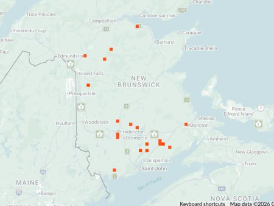

photo: Denis Doucet April 25, 2022

Distribution map (based on iNaturalist observations)
Identification
- Medium-sized (11–14 mm), bright metallic green to blue with bold white maculations and reddish legs.
- Distinctive claybank specialist; fast runner on open ground.
- Active in spring and summer; often on clay or gravel banks.
Habitat in New Brunswick
Prefers clay or gravel banks, river shores, roadsides, and open disturbed areas with bare soil. Thrives in sunny, sparsely vegetated sites with clay-rich substrates.
Flight Season in NB
April 14 – September 3 (spring–summer; peaks May–July).
Distribution & Notes
Scattered in southern and central New Brunswick, particularly along river valleys and clay-rich areas. One of the earlier-emerging species; populations can be locally abundant on suitable banks but sensitive to vegetation overgrowth and habitat alteration.